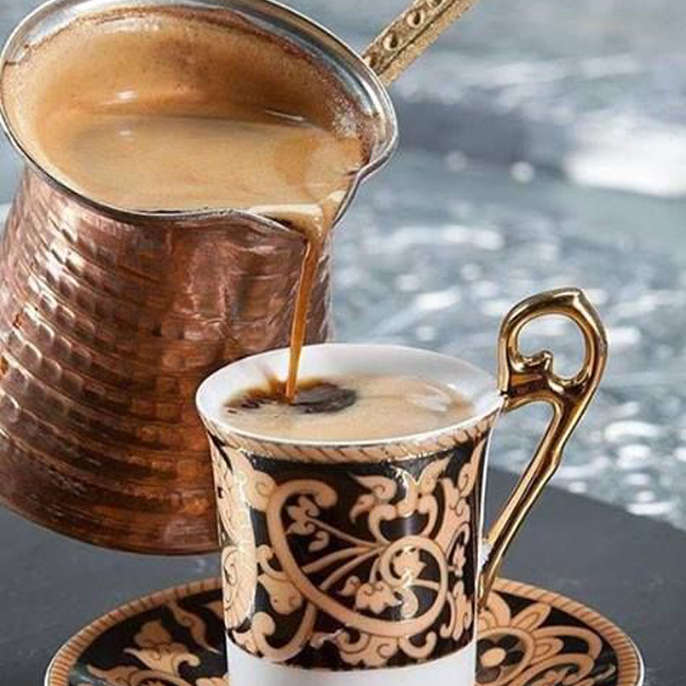

brewing your most delicious cup of joe, however, wherever.
For the most common flat bottom filter you want to grind the coffee beans a medium grind that resembles that of a sea salt texture. After measuring 2 Tbls. of ground to every 6 oz. of water into the filter and brew instantly.
First, insert the basket into the percolator. Then pour 1 c. of water into the percolator for every mug of coffee you plan to brew, making sure the water level does not pass the bottom of the coffee basket.
Open the lid of the coffee basket and pour 2 Tbls. of coarsly ground coffee per mug into the basket and replace the lid.
Set the coffee maker on a stove burner and heat on a medium-high setting. Heat the coffee untill it begins percolating witch should be visible in the glass knoab atop the carafe. Continue to heat for three minutes, not allowing it to come to a complete boil.
French press coffee provides a much richer taste due to the fact this method of brewing requires no filter. This allows more of the oils of the coffee beans to make it into your cup of joe.
You will want to grind your coffee beans coarsly. Scoop 2 tablespoons of coffee for every 6 oz. of water. Add the hot water thats just off the boil to the chamber, and bre for 4 minutes before pressing the grounds to the bottom.
Pour overs are perfect if you want to only make a cup or two instead of brewing an entire pot and pouring half of it out after its gone cold.
First you will want to pre-moisten the coffee filter & discard the rinse water.
Then measure and grind coffee beans for a paper cone filter. This grind should resemble that of granulated sugar. 2 tablespoons to every 6 oz. of water should do the trick.
Making sure to saturate all of the grounds in the filter, pour the boiling water into the top of the cone.
